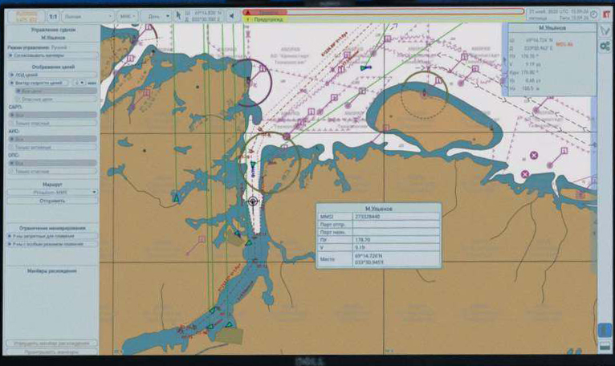

Technology
Autonomous Navigation System
ANS performs the functions of automatic analysis of the environment, the passage along a given route (in automatic mode and remote control mode), offering automatic decision-making on maneuvering while taking into account the parameters of the vessel and COLREGs-72 provisions. ANS includes Sensor Fusion Module (SFM), Automatic Collision Avoidance Module (ACAM) and ANS Client (representing extended functionality of ECDIS).
The Sensor Fusion Module (SFM) integrates, synchronises and validates navigational data from different sources such as the radar, AIS, positioning, compass, weather station, etc, and the optical system OSA. This is similar to an officer onboard who has to gather data from all of these navigational devices, his eyes and integrate it into a single picture in his mind.
The Automatic Collision Avoidance Module (ACAM) keeps to the route and calculates the maneuvers of the vessel to avoid collisions with other vessels and navigational hazards in accordance with rules determined by COLREGs-72. These detailed rules are provided as per clear official recommendations from the Russian Federal Agency for Marine Transport for automatic collision avoidance systems. Strictly determined algorithms of this nature make MASS 100% predictable, even when placed in comparison with a traditionally crewed ship.
The ANS Client integrates all the data from mandatory and additional electronic charts (such as ICE or SAT images) and any other available information, and presents it via human interfaces that are similar to ECDIS.